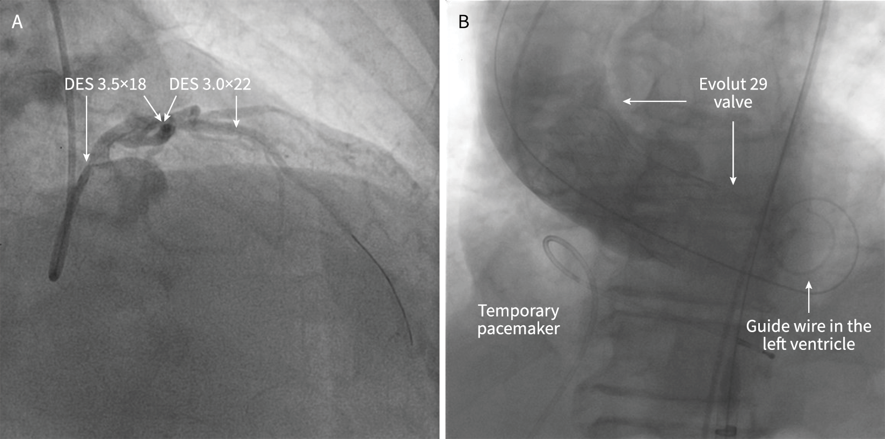
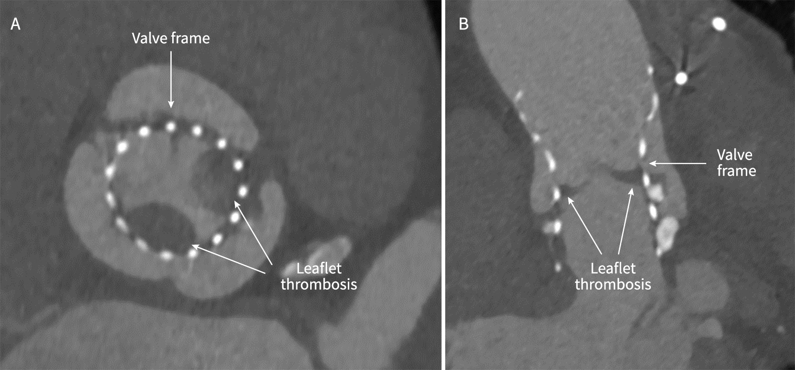
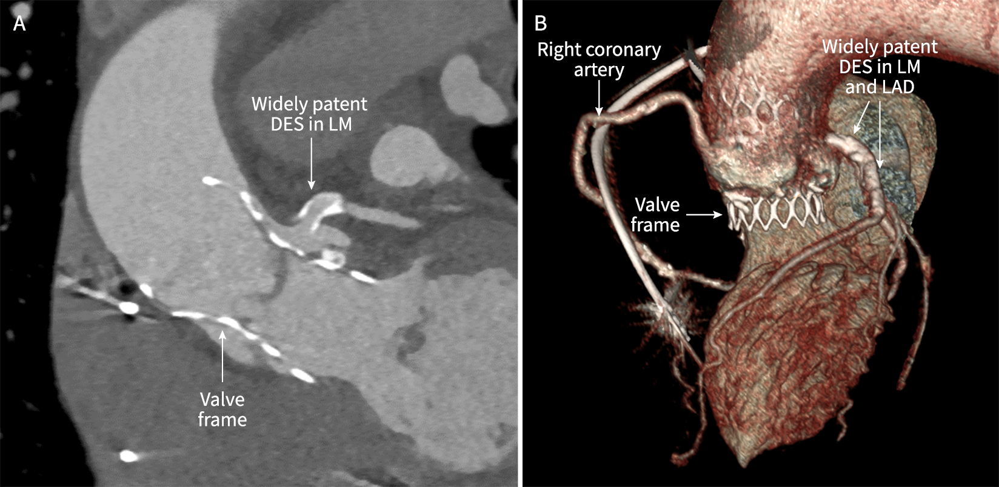

Leaflet thrombosis after transcatheter aortic valve implantation: a case report
Abstract
We herein report the case of a 80-year old man with symptomatic degenerative aortic stenosis (peak gradient 58 mmHg, mean gradient 38 mmHg, valve area 0.9 cm2) and haemodynamically significant left main coronary artery (LM) and anterior descending artery (LAD) stenosis with fractional flow reserve of 0.72. Because of the age and significant degenerative spine disorder, the patient refused open heart surgery. We first performed percutaneous coronary intervention (PCI) on the LM and LAD, which was followed by staged transcatheter aortic valve implantation (TAVI) with self- expandable device. There was no significant aortic regurgitation and mean aortic gradient was 12 mmHg. After 4 months, mean gradient increased to 23 mmHg and this was associated with worsening of the patient’s exercise capacity. Computed contrast-enhanced tomography of the aorta showed thrombosis of the left and non-coronary cusps with decreased leaflet mobility. Stents in the LM and LAD were widely patent without significant in-stent restenosis. Acetylsalicilic acid was stopped and coumadin added to clopidogrel. After 4 months, mean gradient was 9 mmHg. After additional 3 months of anticoagulat therapy, it was 12 mmHg. Oral anticoagulation was therefore stopped and acetylsalicylic acid restarted.
1 Introduction
Transcatheter aortic valve implantation (TAVI) has become a routine method of therapy for degenerative aortic stenosis in older patients with a medium or high risk for open heart surgery (The last international recommendations). According to randomized studies, such treatment, which is less invasive and allows fast rehabilitation, is at least as effective as surgical replacement of the aortic valve (Partner, SurTAVI). With the advancement in technology in the manufacture of the valve and decreasing diameters of guide wires, there are fewer short-term vascular complications, and the valve can operate well even after several years. Among long-term complications we are especially careful about valve degeneration through the development of a significant aortic stenosis or insufficiency. Another interesting and largely under-researched complication is leaflet thrombosis, which was first described only a few years ago (Makkar NEJM
2 The case
An 80-year-old patient was treated because of advancing dyspnea breathlessness on mild exertion. An ultrasound (US) of the heart showed a heavily calcified and stenosed aortic valve with the maximal gradient of 58 mmHg, mean gradient of 39 mmHg, and a 0.9 cm2 aortic valve area (AVA). Low to moderate aortic regurgitation was also present. The left ventricle size was normal, moderately thickened with an ejection fraction of 60%. There were no signs of significant pulmonary hypertension (the gradient on the tricuspid valve was 22 mmHg). Coronarography showed moderate stenosis of the whole left main coronary artery (LM) with a ventricularisation of the pressure curve. Stenosis was spreading from LM also to the proximal and middle part of the left anterior descending artery (LAD). Fractional flow reserve measured in the distal part of LAD was decreased at 0.72 (normal > 0.80). We also performed a computed tomography angiogram of the aorta with contrast, following the TAVI protocol, which showed that the patient can have a transcatheter aortic valve implantation with a self-expandable device.
The patient’s condition and the results of the above examinations were analysed by the multidisciplinary heart team, consisting of a cardiologist, a cardiovascular surgeon, an echocardiographist and an interventional cardiologist. It was the decision of the multidisciplinary team to help the patient either surgically by replacing the aortic valve and a bypass from the left internal mammary artery (LIMA) to LAD, or with the less invasive procedure using percutaneous coronary intervention (PCI) LM/LAD and TAVI. Because of the significant degenerative disease of the spine and his age, the patient decided for the percutaneous method.
We first conducted PCI LM and LAD by implanting two drug-eluting stents (DES) (Figure 1A). After this procedure the patient’s physical capabilities already mildly improved. He had been receiving 100 mg of acetylsalicylic acid and 75 mg of clopidogrel per day as part of his antithrombotic therapy. In the second procedure we then conducted a TAVI with an Evolut 29 (Medtronic) valve (Figure 1B). An US immediately after the procedure showed a mean gradient of 12 mmHg on the aortic valve and minimum paravalvular aortic regurgitation. During valve implantation the patient’s electrocardiogram (ECG) showed a new left bundle branch block (LBBB) and a first-degree atrioventricular block, which persisted for several days, therefore we inserted a DDDR type permanent cardiac pacemaker. The patient continued with his antithrombotic therapy with acetylsalicylic acid and clopidogrel, which he received after the insertion of the DES.


The patient’s physical capabilities significantly improved immediately after the second procedure, and after a few months he stated that it had somewhat declined. Following up we decided to conduct an early heart US (after 137 days instead of 6 months), which showed an increase of the mean gradient on the aortic valve from 12 mmHg to 23 mmHg. Because of suspected leaflet thrombosis of the aortic valve we conducted a CTA which showed thickening of the left and non-coronary cusps near the base of the metal part of the endoprosthesis with decreased leaflet mobility. This confirmed our clinical suspicion. CTA also confirmed that both DESs in the LM and LAD were patent without significant in-stent restenosis (Figure 3).

Acetylsalicylic acid therapy was stopped and 75 mg of clopidogrel was retained, while warfarin with target INR of 2.0–2.5 was added. The patient felt that his condition was improving once again. Another US after 3 months of therapy showed a decrease in the mean gradient on the aortic valve to 9 mmHg. After 7 months of unaltered therapy we conducted another US, which showed that the gradient was at 12 mmHg, there was absence of aortic regurgitation, a good ejection fraction of the left ventricle (70%) and an absence of significant pulmonary hypertension (gradient on the tricuspid valve 26 mmHg). We stopped the warfarin therapy and restarted acetylsalicylic acid.
3 Discussion
Because of the growing number of elderly patients with several diseases and concomitant heavy aortic stenosis, Medicor also began practicing TAVI in the second half of 2017. For this purpose we set up a TAVI team in line with international guidelines, consisting of the patient’s cardiologist, an interventional cardiologist, a cardiovascular surgeon, an echocardiographist and a radiologist with a specialization for CTA of the aorta. So far we have successfully treated 45 patients with a 30-day survival rate of 97.8% (44 of 45 patients).
The patients are regularly monitored after the procedure, and we conduct routine heart US at discharge, after 6 and after 12 months, or earlier if there is a clinical suspicion of changes in the function of the valve. In the case of our patient we suspected leaflet thrombosis of the implanted trancatheter aortic valve, which was then confirmed by the CTA of the aorta, along with an absence of restenosis in the DES in LM and LAD, which could also have been the cause or contribute to the patient’s symptoms.
TAVI is a procedure in which the risk of thromboembolism is joined by an increased possibility of bleeding. Because this procedure is mostly conducted on elderly patients, a strategy of antithrombotic and anticoagulant therapy is necessary. Before the procedure we use standard heparin, which is dosed according to activated clotting time (ACT), which must be at at least 250 seconds. Using standard heparin is also supported by the BRAVO-3 randomized study, which showed a comparable share of significant bleedings when using bivalirudin. After TAVI we started acetylsalicylic acid, 100 mg per day, together with clopidogrel, 75 mg per day, for 3 to 6 months. Because a significant share of patient has a PCI before TAVI, this often presents no changes in the therapy. With patients who are already receiving anticoagulant therapy with warfarin or a new oral anticoagulant (NOAC) before undergoing TAVI, there is no need for any additional antiaggregation therapy. We only include it with patients who already had PCI. In this case acetylsalicylic acid is added to the anticoagulat therapy for up to 30 days, and clopidogrel for up to 12 months after PCI (4). When atrial fibrillation is present, anticoagulant therapy must be adjusted on an individual basis, using CHA2DS2-VASc and HAS BLED scores (4).
International studies include at least 15 cases of leaflet thrombosis after TAVI. 12 patients developed this complication during double antiaggregation therapy, and one patient only took acetylsalicylic acid (5).
Diagnosis was set on average 9 months after the procedure. For 12 patients the leading symptom was exertion dyspnoea, as was also the case with our patient. With leaflet thrombosis we also see the rise of the transvalvular gradient and thick leaflets with limited mobility, but there can also be a suspicious formation, similar to a thrombus. With 11 patients the complications were treated with anticoagulant treatment. In three cases surgical removal of the thrombus was needed, while there are no reports on thrombolysis in any of the studies (5).
Thrombosis of a biological valve after TAVI is a very rare occurrence and the reasons for it are not yet fully understood. It is possible that age and concomitant prothrombogenic conditions contribute to this. In this sense chronic kidney patients and those with a low ejection fraction of the left ventricle. A possible cause of thrombosis can also be in slow endothelisation of the metal valve frame, especially when non-optimum position causes pockets to form, which in turn forms areas of the blood stasis with native leaflets (5,6). The required examinations that we conducted during the course of discovering and confirming the diagnosis, and were also conducted on our patients, are transthoracic US of the heart and the CTA of the aorta with contrast. We are especially careful of early leaflet thickening and their reduced mobility, which are described in international studies as HALT (hypoattenuated leaflet thickening) and RELM ( reduced leaflet motion). Both were finally confirmed by CTA, however this does not share any insights into the hemodynamics that can be defined with US of the heart, which shows the gradient of the valve, a potential aortic regurgitation, and its positioning, and additionally also the functioning of the left ventricle and the level of potential pulmonary hypertension (7).
With increasing popularity of TAVI we can expect in the future a detailed protocol for early discovery and therapy of valve leaflet thrombosis. This complication is not as rare as we imagine. Some studies report on incidence 1–5% in the group of patients with no symptoms and 4% with patients whose symptoms return after the procedure (4). Additional studies will also resolve the dilemma on the most appropriate type and duration of treatment, either with antiaggregating drugs and anticoagulants or with appropriate combinations of both (5,6).
The patient agrees with the publication of the article.